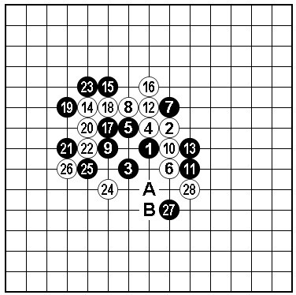
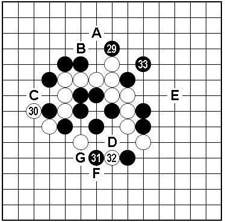

关于“斜月”一个黑胜变化
#1 关于“斜月”一个黑胜变化作者：茗弈宽容 发表时间：2011-1-5 11:23:28
关于图一的28黑如何胜？记得约八九年前，有次在联众观战，老于（于京平）告诉我黑棋下方A、B后可胜。老于对“斜月”的研究是非常深入的，那段时间受教颇多获益匪浅。由于此型从未实战碰到，也很少有人提及，因此具体变化也一直未加验证。昨日拆解了一番，感觉变化比较复杂。
图一

如图二所示。首先感觉黑29盖冲是有必要的一手，如省略上方白棋比较麻烦。白30如简单防A~C，黑下方D、32后必胜形。图二的白30此际唯一的顽抗手段，兼顾上下的防守要点。此时，如黑依旧按照前面的下法，未发现明显的胜机（或许有遗漏）。由于此型局面开阔，黑棋可以充分利用全局子力的配置。按照这种思路31在下法略作交换后，抢占33绝好点！后面的变化就容易多了。此处33如按一般定式的选点着于E位感觉较缓，不如本图的紧凑。
如32-F，33-G，34-32，35-33！

转自中国五子棋网
#2 Re:关于“斜月”一个黑胜变化作者：忧郁的双眼 发表时间：2011-1-7 14:59:27
老师的斜月也是造诣颇深啊~